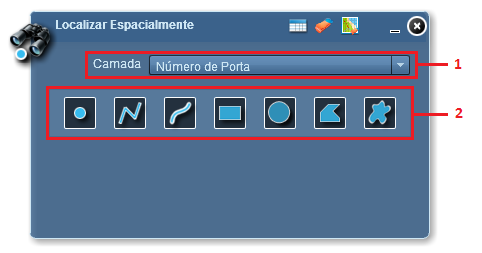
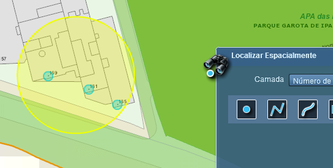

Passos para realizar a pesquisa espacial:
1 - Clicar sobre a funcionalidade “Localizar Espacialmente”;

2 - Selecionar Camada que o filtro será aplicado;

3 - Escolha a ferramenta que será utilizada para realizar o desenho sobre o Mapa. O desenho definirá a área que será aplicada o filtro espacial;

4 - Utilize a funcionalidade Lista de Resultados para exibir as informações referentes às feições selecionadas no Mapa.